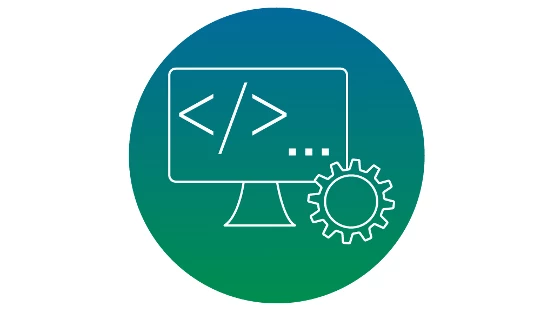

Cursos Técnicos
Aqui você encontrará informações sobre nossos cursos Técnicos do Ensino Médio Profissionalizante ofertados para 2025:
Técnico em Administração
Descrição do curso:
O Técnico em Administração poderá: executar operações administrativas de planejamento, pesquisas, análise e assessoria no que tange à gestão de pessoal, de materiais e produção, de serviços, gestão financeira, orçamentária e mercadológica; utilizar sistemas de informação e aplicar conceitos e modelos de gestão em funções administrativas, sejam operacionais, de coordenação, de chefia intermediária ou de direção superior, sob orientação; elaborar orçamentos, fluxos de caixa e demais demonstrativos financeiros, entre outras previsões constantes no perfil profissional do Catálogo Nacional de Cursos Técnicos do Ministério da Educação.
Técnico em Desenvolvimento de Sistemas

Descrição do curso:
O Técnico em Desenvolvimento de Sistemas poderá: desenvolver sistemas computacionais utilizando ambiente de desenvolvimento; dimensionar requisitos e funcionalidades do sistema; realizar testes funcionais de programas de computador e aplicativos; manter registros para análise e refinamento de resultados; executar manutenção de programas de computador e suporte técnico; realizar modelagem de aplicações computacionais; codificar aplicações e rotinas utilizando linguagens de programação específicas, entre outras previsões constantes no perfil profissional do Catálogo Nacional de Cursos Técnicos do Ministério da Educação.